ASCENT / SOL REFINEMENT CYCLE / ORIGINAL TOWER ASSETS
Cinderworks:
anatomy, construction & motion.
The preserved Sol archway and twin-cylinder pump, with a substantially rebuilt Cindermaw: a hinged mandible, defined orbital anatomy, rooted horns, grouped limbs, individual digits and fitted armor.
These are refined review candidates. The native Rust images are the game-appearance evidence. Cycles images support inspection of surfaces and contact shadows. The user retains artistic approval; neither technical validation nor presentation lighting certifies professional art quality.
The maintenance yard · native Rust
The arch organizes the rear wall, the pump occupies a paved service area, and the drake approaches over compacted ash and scoria. Original retained wall, barrel and stock-rack assets provide context. The scene contains no authentic cache mesh or proprietary reference imagery.
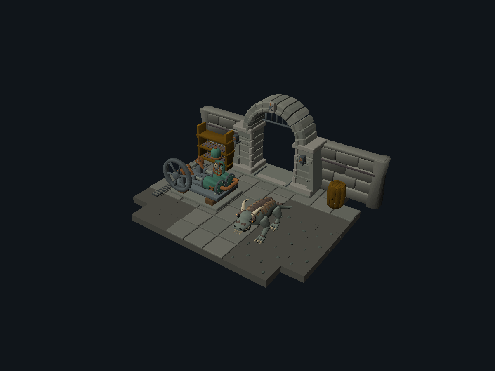
Native overview · 1200 × 900 · fixed ambient 64 / contrast 768, light [-30, -50, -30]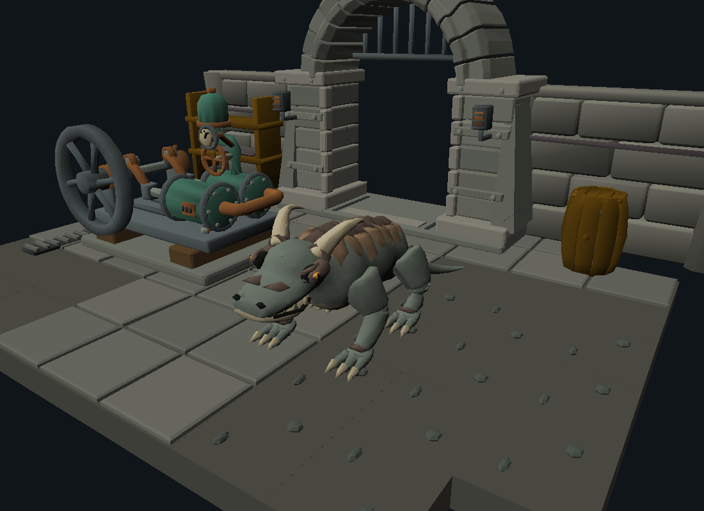
Native close scene · original source geometry, no post-render relightingCindermaw · the primary refinement
The previous continuous body was a useful starting point. This cycle develops the face and material hierarchy, gives the toes and mandible a clearer construction, fits armor to the actual torso surface and separates anatomical groups for full-body animation.
 Preserved Sol result · commit 9492a2dSelected refinement · identical native camera and light
Preserved Sol result · commit 9492a2dSelected refinement · identical native camera and light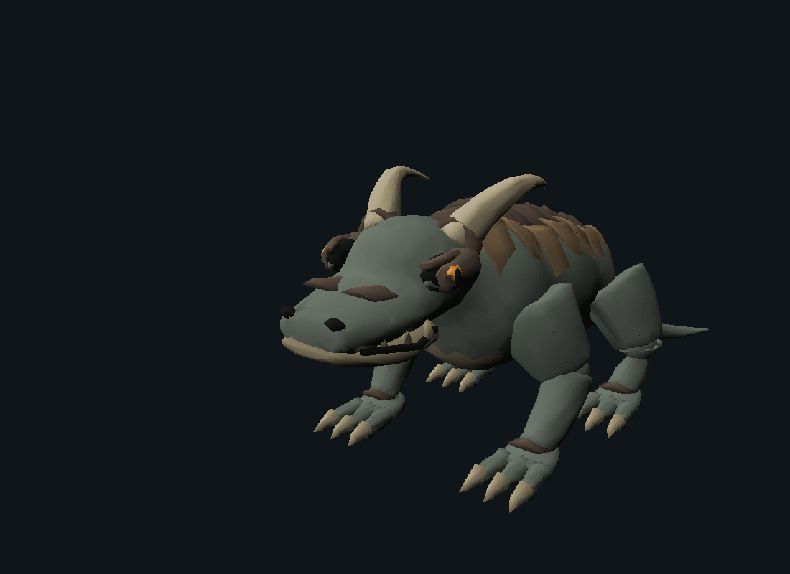
Native facial close-up · upper and lower lids, small iris, horn roots, nasal shields, teeth and articulated jawMulti-angle native review
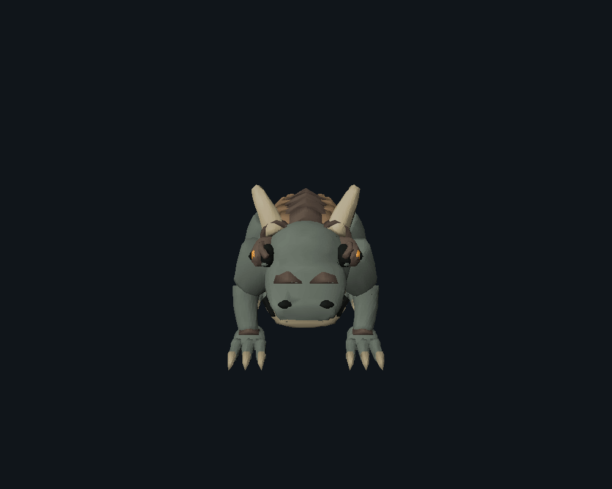
Native turntable · eight equally spaced views, fixed geometry and lightingWhat changed between iterations
The early material mask used local coordinates and incorrectly colored the back. Knee spheres made the limbs look mechanical. Later passes correct the mask in world space, add subdivision support sections, reduce the joint caps, move the eyes clear of the brows and fit subdivided armor shells to the torso. A final flexor overlap reduces joint gaps.
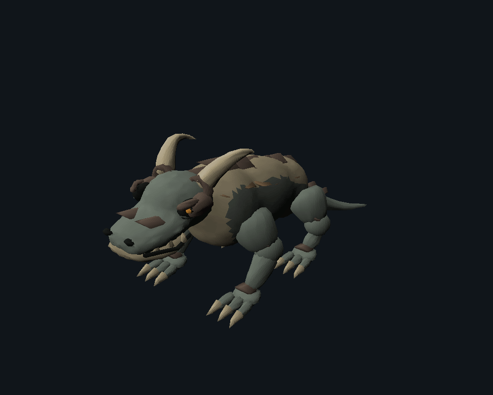
Early refined pass · wrong mask and spherical kneesMask fixed · armor still floating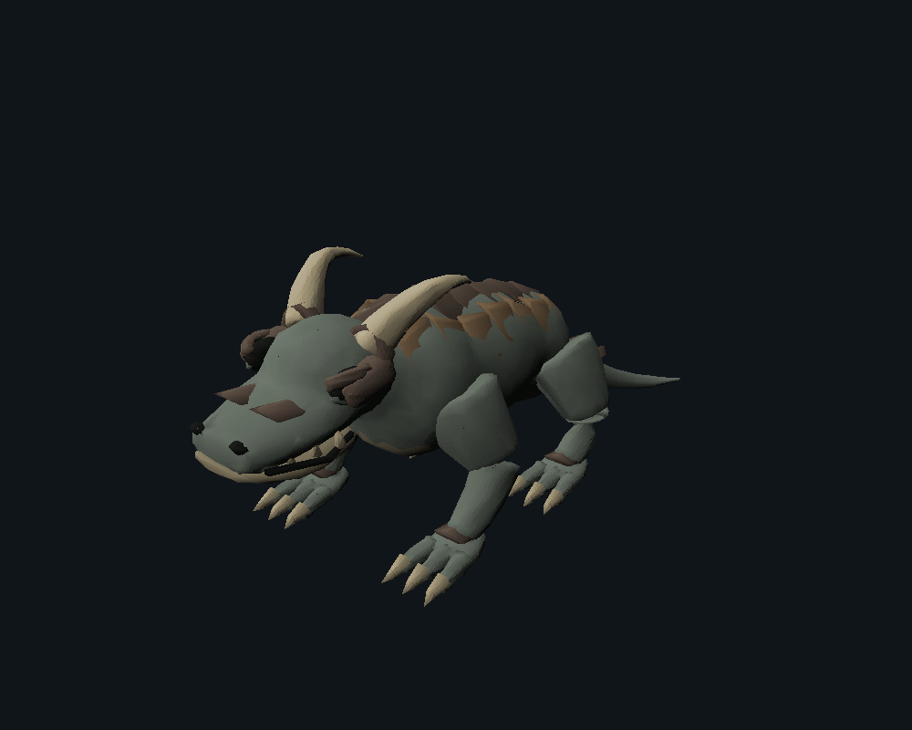
Support sections · armor fit still incomplete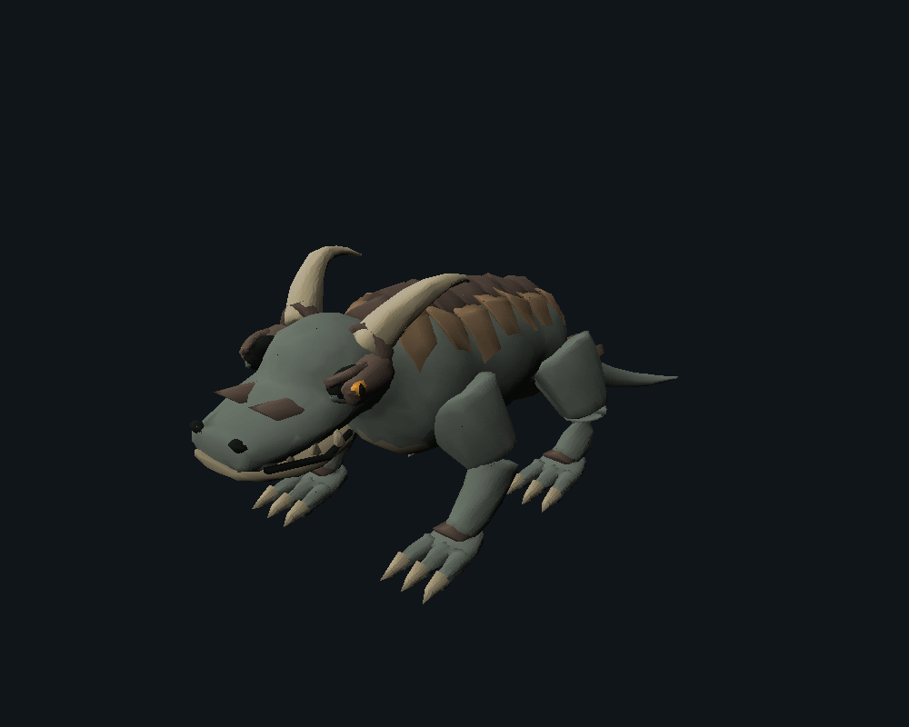
Fitted subdivided shells and visible irisRemaining artistic weaknesses: the torso still has broad quiet areas, classic rigid-group joints remain visible at some angles, and very small details soften on the native integer grid. The head and armor carry more visual identity, but this is not a claim that every angle has reached the intended final standard.
Five complete native actions
The rig includes body, head, jaw, tail and three joints per limb. Walking uses the existing two-bone solver and sole-surface correction. Attack has a windup, forward strike and recovery; hit recoils and returns; death folds the limbs, rolls onto the side and holds the final pose.
409 native pose samples match the independent integer transform evaluator exactly. This validates exported deformation, not artistic excellence. Walking has no measured ground penetration or fully airborne frames; mean stance surface-height error is 0.55 native units, maximum 4, at 128 units per tile.
Idle
Breathing posture, head, jaw and tail.
Representative action sequence
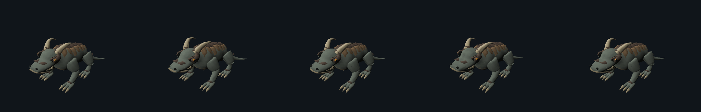
Start · quarter · midpoint · three-quarter · endWalk
Complete in-place quadruped cycle; no whole-model travel used to fake stepping.
 Native walk · complete authored duration
Native walk · complete authored durationRepresentative action sequence
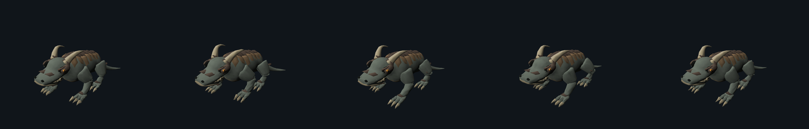
Start · quarter · midpoint · three-quarter · endAttack
Anticipation, jaw opening, strike and recovery.
 Native attack · complete authored duration
Native attack · complete authored durationRepresentative action sequence
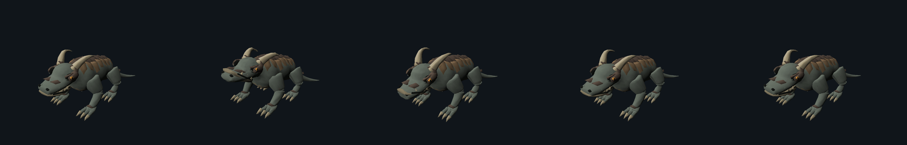
Start · quarter · midpoint · three-quarter · endHit
Body recoil, tail response and return.
Native hit · complete authored duration Representative action sequence
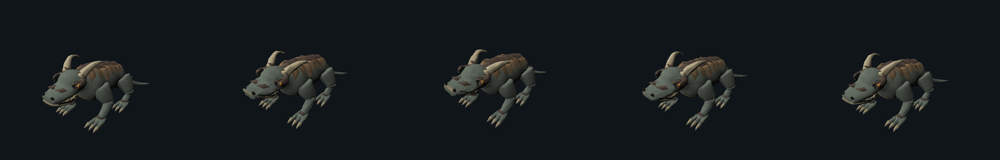
Start · quarter · midpoint · three-quarter · endDeath
Limb folding, side fall, settling and a 60-tick final hold.
Native death · complete authored duration Representative action sequence
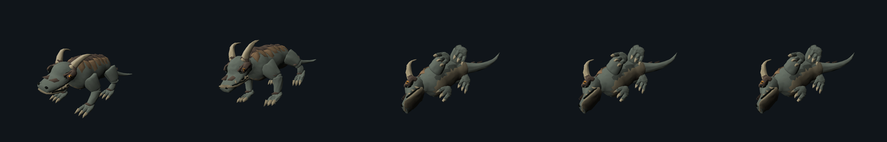
Start · quarter · midpoint · three-quarter · endDeath-pose correction
The first fall balanced on a toe and left the torso 43 units above the lowest point. Additional hip folding reduces that offset to 7 units; the shoulder and head now support the corpse. This correction came from native pose coordinates and visual inspection.
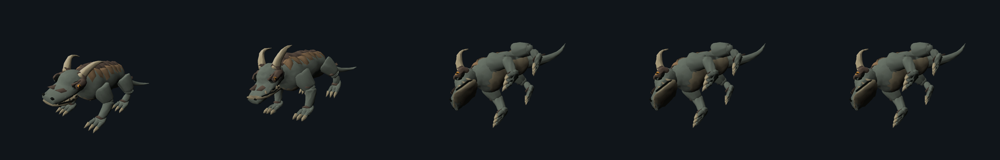
Before · extended toes prevent the body from settlingAfter · folded limbs and stable final holdPreserving and refining the service architecture
The arch retains its load-bearing voussoirs, deep reveal, jambs and buttresses. Stone batches, restrained chips, iron springer seats, rivets and foundation returns refine the existing design without adding an unrelated mechanism.
 Preserved arch · same native camera
Preserved arch · same native camera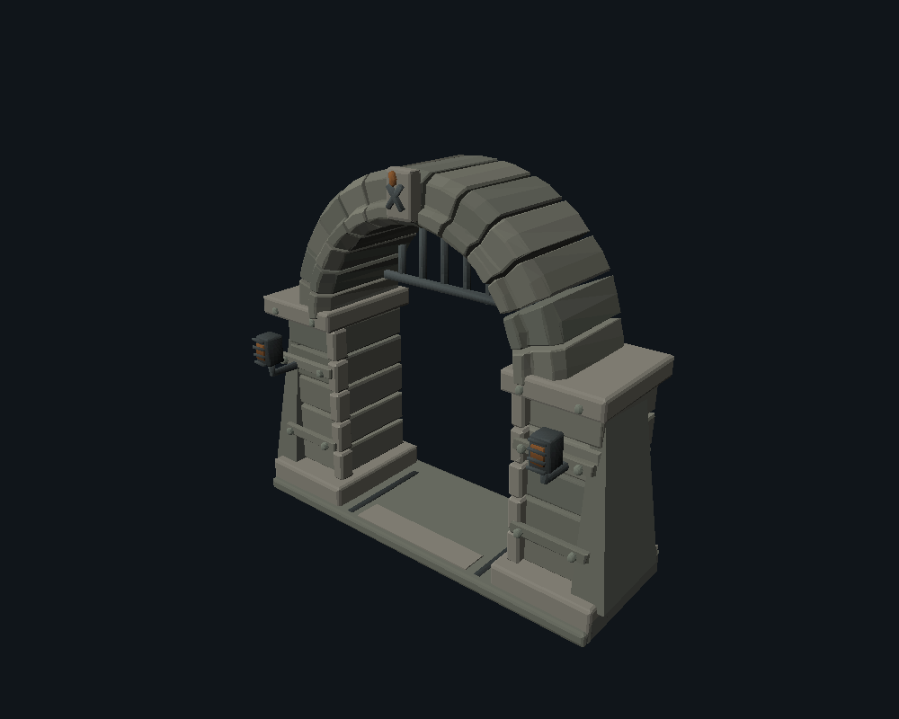
Refined masonry and reinforcementThe twin-cylinder pump retains its crankshaft, eccentric pins, guided piston rods, intake manifold and pressure vessel. Packing glands, oil cups, a legible gauge, a drain tap and supporting fittings clarify maintenance and operation. It remains a static visual assembly; mechanical simulation has not been claimed.
Architecture: front, side, rear and gameplay
Machine: front, side, rear and gameplay
A reusable Blender presentation studio
Cycles runs on the confirmed GTX 1660 Ti CUDA device, with CPU rendering deselected. The source is normalized for presentation, lit by three area lights against a neutral background, with soft physical contact shadows. Native model units and source assets are preserved separately. These images are clearly labeled as Blender presentation.
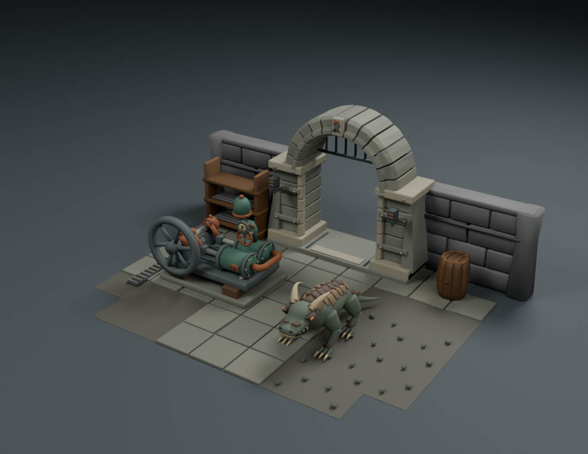
BLENDER CYCLES · integrated environment · physical lighting and contact shadowsBlender orthographic reference views
Reusable refinement and delivery
| Utility | Purpose and actual use |
|---|
| refine.py | Supported surface cages, controlled volume fusion, contour relaxation, world-space material regions, fitted shell projection, grouped anatomy, targeted source simplification. |
| review.py | Fixed native asset cameras and light; repeatable close, multi-angle and gameplay views. |
| presentation.py | CUDA selection, three-point Cycles studio, contact shadows, clay, wireframe, orthographic and orbit camera presets. |
| motion.py | Explicit anatomical classic groups and authored actions, reusing the existing joint compiler and gait solver. |
| motion_review.py | Complete native playback, independent pose comparison, full previews and action sheets. |
| diagnostics.py | Native stance measurements, identical-mesh shading/material comparisons and native turntable. |
| scene.py / scene_blender.py | Portable native placement and original-source Blender assembly, using the same asset scale and layout. |
| native_delivery.py | Optional evaluated experiment: weld coincident quantized vertices within each component. Removes 782 duplicate vertices in this creature. Subtle shading benefit; not selected for the validated final delivery or animation rig. |
Material and native-render findings
Material regions and native interpolated shading remain more reliable than tiny surface noise. The same geometry is shown below with flat shading and with one material. UVs remain in the editable source, but arbitrary image textures, shader graphs, roughness and normal maps are not silently claimed to survive. The previous source-safe UV-baking test remains preserved in the base study.
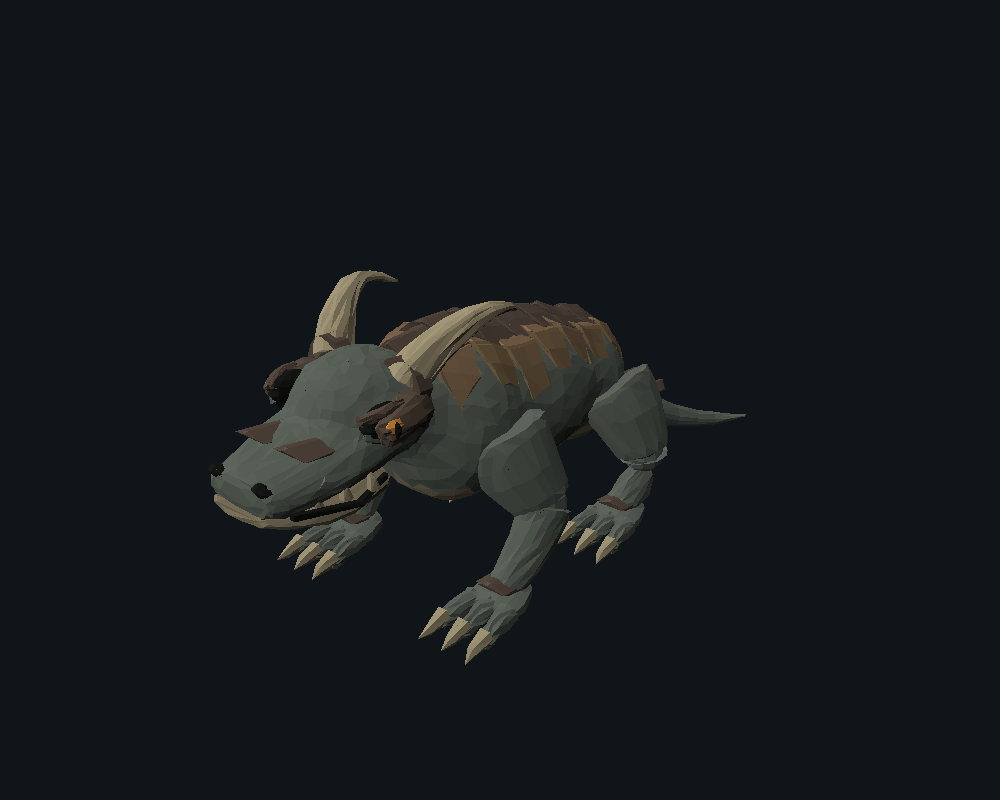
Identical mesh · flat native shadingSelected interpolated shading and material regions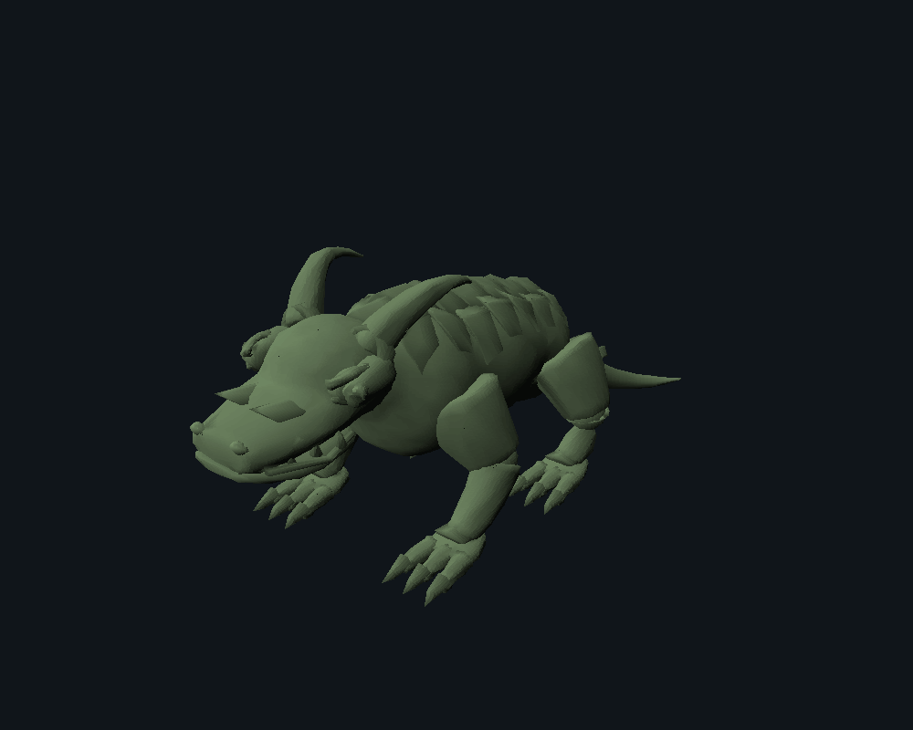
Identical mesh · one native HSL materialGeometry is rounded only in the exported copy, with maximum error 0.5 native units per axis. Collapsed micro-triangles are counted and removed. A dense support-loop pass exceeded the codec’s section limit, so delivery simplification was added as an editable modifier. Mesh density is a delivery constraint, not an artistic score. The codec and authoritative Rust renderer are unchanged.
| Asset | Vertices | Triangles | Collapsed micro-triangles |
|---|
| Architecture | 3,438 | 6,200 | 320 |
| Machine | 3,026 | 5,599 | 97 |
| Creature | 9,687 | 17,354 | 1,612 |
Production workflow
- Write the silhouette, construction and material plan. Preserve the strongest prior source and native images.
- Refine primary proportions in front, side and perspective views before secondary detail.
- Fuse only continuous organic masses. Keep moving anatomy in explicit groups, with overlaps designed for articulation.
- Use support sections and restrained bevels for the intended edge treatment. Project fitted details to the real surface.
- Assign broad material regions using world-space coordinates; inspect native results before adding density.
- Export, compare under fixed native cameras, name the largest shortcomings, and correct them in the source.
- After static review, author full action timing, validate actual native movement and check final contact poses.
- Use Cycles clay, orthographic and topology views as diagnostics, then return to native acceptance images.
Remaining limitations: visible classic rigid-joint transitions; native lattice loss on very small details; painter-order and smoothing differences compared with Cycles; no arbitrary PBR transfer; a broad torso that could still use more intentional surface rhythm. The architecture and pump improvements are incremental, while the creature and animation receive most of the cycle’s work. Final artistic approval remains with the user.
No paid external generation was used. No original cache data, private references, credentials or live-map changes are included. The interrupted Astra experiment remains preserved in its separate workspace and is not presented as a completed controlled model comparison.
Detailed workflow and commands · Sources, tool identities and mesh reports · Native motion diagnostics · File hashes